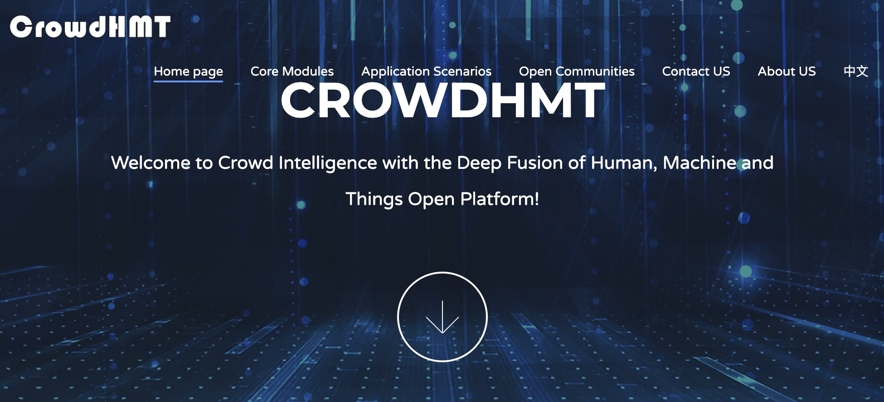

Sicong Liu刘思聪
I'm currently an associate professor in the School of Computer Science at Northwestern Polytechnical University (NPU). Before joining NPU, I received my Ph.D. degree from Xidian University, China, in 2020. And I had an experience as a joint PhD student at Rice University.